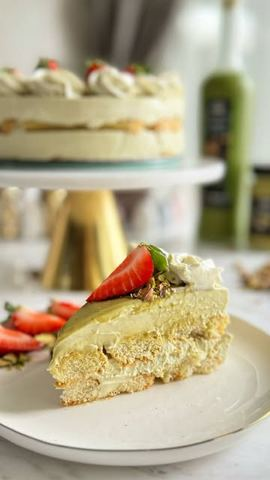

Pistać tiramisu tortica

Moja beleška
SačuvanoLagana pistać tortica, bruuutalnog ukusa, priprema bez jaja, sa mascarpone sirom i savršenim pistać kremom 🥰🥰 Ja sam pronašla i kremasti liker sa ukusom pistaća, a naravno možete dodati i neki drugi ili zameniti sa espresso kafom 🥰 Da pređemo na recept:
Sastojci
- Potrebno vam je
- Za fil
Priprema
Za preliv možete dodati još 50ak grama pistać krema i malo seckanih neslanih pistaća 😍 Ja sam je pripremala u kalupu od 20 cm 💕 Za fil umutite mascarpone sir, dodate slatku pavlaku pa povežete mikserom i na kraju krem od pistaća koji ste malko otopili (u šerpici vrele vode ili u mikrotalasnoj na par sekundi). Povežete smesu i mažete je preko prvog i drugog reda piškota. Ostavite da se malo stegne i da piškote omekšaju — i uživajte… Savršena i kao predlog za uskršnju poslasticu za celu porodicu!
Originalni opis sa Instagrama
Pistać tiramisu tortica 🌸 Lagana pistać tortica, bruuutalnog ukusa, priprema bez jaja, sa mascarpone sirom i savršenim pistać kremom 🥰🥰 Ja sam pronašla i kremasti liker sa ukusom pistaća, a naravno možete dodati i neki drugi ili zameniti sa espresso kafom 🥰 Da pređemo na recept: Potrebno vam je: • 2 reda piškota (nekih 20ak komada) • malo mleka za umakanje • 1 čašica pistać likera Za fil: • 500 gr mascarpone sira • 200 ml slatke pavlake • 190 gr pistać krema Za preliv možete dodati još 50ak grama pistać krema i malo seckanih neslanih pistaća 😍 Ja sam je pripremala u kalupu od 20 cm 💕 Za fil umutite mascarpone sir, dodate slatku pavlaku pa povežete mikserom i na kraju krem od pistaća koji ste malko otopili (u šerpici vrele vode ili u mikrotalasnoj na par sekundi). Povežete smesu i mažete je preko prvog i drugog reda piškota. Ostavite da se malo stegne i da piškote omekšaju — i uživajte… Savršena i kao predlog za uskršnju poslasticu za celu porodicu! #pistac #tiramisu #tortica #uskrsnjasto #uskrsnjaposlastica #brzirecepti #ukusnidani #domacirecepti #torteikolaci #slatkisvakiadan #kremastatorta #inspiracijazadesert